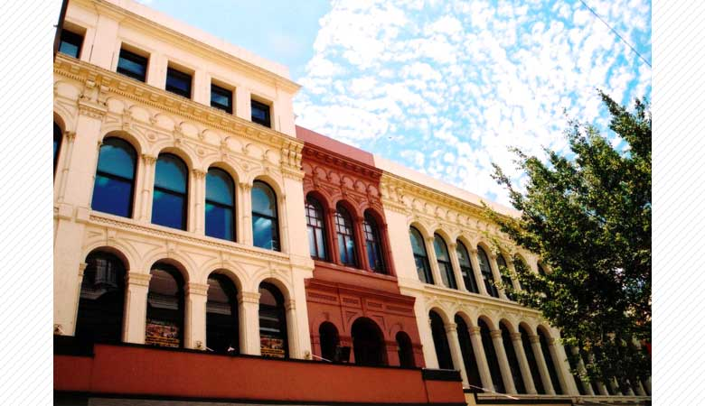
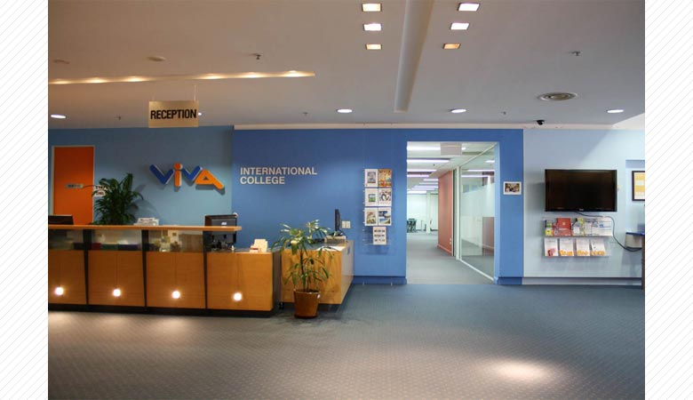
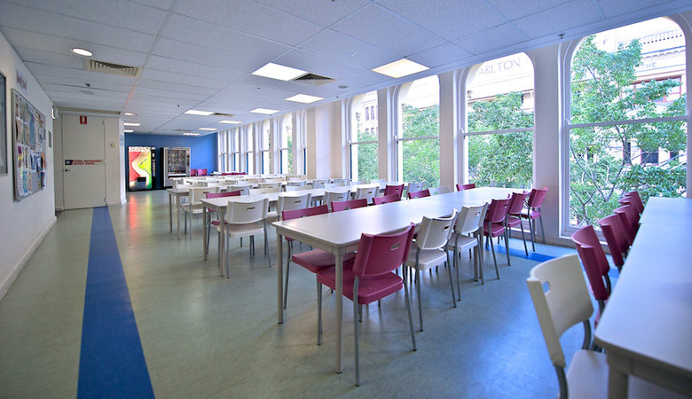
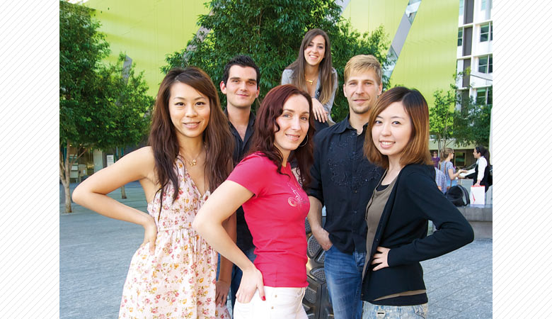

Viva Collegeは交通機関へのアクセスおよび日常のお買い物にも便利なブリスベンの中心Queen Street Mallに位置し、
質の高い授業およびケアーの行き届いた学校として知られています。

Viva Collegeは留学生の為の英語コースを提供する学校としてスタートし、後にビジネスコースおよび英語教師訓練コースを設置しました。
プロフェッショナルでフレンドリーなスタッフが学生達のゴール達成の為にお手伝いいたします。

人気のコースは一般英語コースを始め、会話集中コースのSmartTalk,
進学対策コースのIELTS試験対策コースおよび進学準備コースです。また就職後に役立つビジネスコースもおすすめです。
フレンドリーで経験豊富な教師たちが短期間で英語を身に付けたい人から大学や専門学校への進学を目指す人まで、
それぞれの目標達成の為にサポートしています。

Viva Collegeでは毎日の学校生活を通して間違いを恐れず英語で話す勇気と自信を身につけるだけでなく、
生涯を通して付き合える友人作り、異文化理解、オーストラリアでの生活習慣を も学ぶことができます。
Viva Collegeにて海外生活の一歩を踏み出し、皆さんの人生にとって有意義な時間を過ごしましょう！
留学・ワーホリフェアにて皆さんにお会いできる事を楽しみにしています！
Viva Collegeはオーストラリアの質の高い教育を保証するNEAS およびACPETの加盟校です。
カリキュラム、教材、学習環境、スタッフ、学生へ提供するサービス等にまで厳しい基準が設けられています。
画面をクリックするとビデオが再生されます。
＜Cambridge International College English Course＞